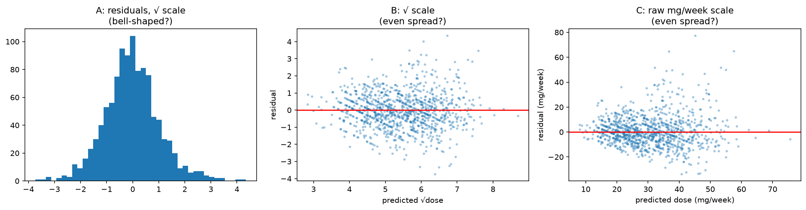

flowchart LR A["0 · Define<br/>the problem"] --> B["1 · Choose<br/>features"] --> C["2 · Encode"] --> D["3 · Missing<br/>values"] --> E["4 · Split"] E --> F["5 · Standardise"] --> G["6 · Model<br/>+ loss"] --> H["7 · Optimise"] --> I["8 · Evaluate"] --> J["9 · Interpret<br/>+ predict"] classDef s fill:#FFF6D6,stroke:#B7950B,stroke-width:2px,color:#2C2C2A class A,B,C,D,E,F,G,H,I,J s
Predicting a warfarin dose
Supervised learning → regression → linear model, built from scratch on 5,371 patients
ImportantNot medical advice
This page reproduces a published research algorithm as a learning exercise. The predictions here must not be used to dose any real patient. Warfarin dosing is done by clinicians using INR monitoring.
1. The problem
Warfarin is a blood thinner given to people at risk of dangerous clots — atrial fibrillation, mechanical heart valves, or a history of deep-vein thrombosis. It has been prescribed tens of millions of times a year.
It is also hard to dose. Too little and the patient can throw a clot and have a stroke. Too much and they can bleed. The dose that keeps a patient in the safe range varies 10- to 20-fold between individuals, and the usual approach is to start everyone near a standard dose and adjust over several weeks using a blood test called the INR (international normalised ratio), which measures how slowly the blood clots. Those first weeks, before the dose settles, are the dangerous period.
The machine learning question: can we predict a patient’s stable dose on day one, from information a doctor already has?
Two genes make this a pharmacogenetics problem rather than a purely clinical one:
- CYP2C9 is the liver enzyme that breaks warfarin down. Slower variants mean the drug lingers, so less is needed.
- VKORC1 is the protein that warfarin blocks. Some variants produce less of it, so there is less to block, and again less drug is needed.
2. The data
The International Warfarin Pharmacogenetics Consortium (IWPC) pooled clinical and genetic data on 5,700 patients from 21 research groups across 9 countries, all of whom had been on warfarin long enough to reach a stable dose. The dataset is distributed through ClinPGx (formerly PharmGKB) and accompanies the 2009 paper Estimation of the warfarin dose with clinical and pharmacogenetic data (PMID: 19228618).
One sample = one patient. The raw table has 68 columns. Most are not usable as model inputs, and sorting them was the first real decision.
What counts as an input
The governing rule in any supervised problem:
A feature is only allowed if you would know it at the moment you need the prediction.
Here that moment is a doctor about to start a patient on warfarin for the first time. Anything measured afterwards is leakage — it makes the model look excellent in testing and useless in practice.
| Bucket | Columns | Why |
|---|---|---|
| Target (y) | Therapeutic dose of warfarin (mg/week) | what we predict |
| Allowed inputs | age, height, weight, race, genotypes, interacting drugs, target INR | known before the first dose |
| Leakage | INR on the reported therapeutic dose | measured after treatment started |
| Filter | “Subject reached stable dose” | known only afterwards, so it cannot be an input — but it decides which patients have a trustworthy y |
| Bookkeeping | IDs, project site, free-text comments, raw and QC genotype columns | not information about the patient’s biology |
Note that target INR is not leakage, even though it contains the letters INR. The doctor chooses the target before treatment begins — usually 2–3, higher for a mechanical valve. Same acronym, different point in time.
The genotype columns appear three times each — the original lab call, a quality-control recheck, and a reconciled consensus value. Only the consensus columns are used; the others would feed the model the same information two or three times.
Filtering
Keeping only patients who reached a stable dose and have that dose recorded:
\[5700 \;\longrightarrow\; 5410 \;\longrightarrow\; 5371\]
(the second step drops 39 patients with no recorded age). Final dataset: n = 5,371 patients, p = 17 features.
3. The decision map
Every step below is a choice. The option taken is in bold; the alternatives are real options that would have been defensible with different data.
| Step | Chosen | Why | Alternatives considered |
|---|---|---|---|
| Target | √(dose) | raw doses are right-skewed (skew 2.36); √ brings it to 0.60 and matches the published model | raw dose; log(dose), skew −0.40, slightly more symmetric but not comparable to IWPC |
| Features | the 17 used by the published IWPC pharmacogenetic algorithm | makes a direct, line-by-line comparison possible | add the other six VKORC1 variants; drop race; add target INR, indication, comorbidities |
| Genotype encoding | one 0/1 column per genotype (“genotypic model”) | assumes nothing about how two alleles combine; lets the data decide | allele-count coding (the “additive model”), 1 column instead of 2 — fewer parameters but assumes each copy has an equal effect |
| Missing age (39) | drop those patients | 0.7% of the data; age matters | impute |
| Missing height (19%) and weight (5%) | impute the training median | dropping would cost a fifth of the dataset | drop rows; regression imputation; add a “was missing” indicator |
| Missing genotype (VKORC1 27%, CYP2C9 2%) | its own “unknown” category | too many to drop, and a doctor often has no genetic test either — the model should still work | impute the most common genotype (would contaminate the real genotype weights); IWPC also imputed VKORC1 from neighbouring variants in linkage disequilibrium |
| Rare CYP2C9 alleles (*5, *6, *11, *13, *14: 1–6 patients each) | folded into “unknown” | 1–6 patients cannot support their own weight | separate columns; drop those patients |
| Missing medication fields (~57%) | treated as “not taking” | most likely sites that did not record the field; the assumption is stated rather than hidden | treat as unknown with its own column; drop those sites |
| Split | 80 / 20 train–test, fixed seed | the test set stands in for future patients | k-fold cross-validation (better use of data, more compute) |
| Scaling | standardise all columns using training mean and SD only | features range from 0–1 to ~190; without this the loss surface is a long narrow valley and gradient descent crawls | no scaling; min–max scaling |
| Model | linear (single neuron, identity activation) | simplest baseline; it is also what won in the original study | random forest, gradient boosting, SVR, neural network |
| Loss | MSE | continuous target; equivalent to maximum likelihood under Gaussian noise (verified in §7) | MAE / Huber if outliers dominate |
| Regularisation | none | 17 weights fitted on 4,296 patients, and train and test error are nearly identical — there is nothing to shrink | ridge, lasso, elastic net |
| Optimiser | full-batch gradient descent, η = 0.1, 2,000 steps | n is small enough that the exact gradient is cheap; written from scratch to show the mechanics | closed-form normal equation (used here as a check); SGD; mini-batch; Adam |
4. The model
With one output, the weights form a vector, not a matrix. The architecture is a single linear neuron:
Using \(n\) for patients and \(p = 17\) for features:
| Object | Meaning | Type |
|---|---|---|
| \(X\) | data matrix — one row per patient, one column per feature | matrix, \(n \times p\) |
| \(\mathbf{w}\) | one weight per feature | vector \(\in \mathbb{R}^{p}\) |
| \(b\) | bias | scalar |
| \(\mathbf{y}\) | \(\sqrt{\text{dose}}\) for each patient | vector \(\in \mathbb{R}^{n}\) |
For a single patient \(i\) (a scalar equation):
\[\hat y_i = \sum_{j=1}^{p} w_j x_{ij} + b = \mathbf{w}^{\top}\mathbf{x}_i + b\]
For every patient at once (a vector equation):
\[\hat{\mathbf{y}} = X\mathbf{w} + b\mathbf{1} \qquad\text{shape check: } (n\times p)(p \times 1) + (n \times 1) \to (n \times 1)\ \checkmark\]
where \(\mathbf{1} \in \mathbb{R}^{n}\) is the all-ones vector, so \(b\mathbf{1}\) adds the same bias to every patient.
Weights live on the input wires, not on the patients. Ten thousand more patients would not add a single weight; one more feature would.
5. The loss, and why the target is square-rooted
Why squared error
\[\mathbf{r} = \mathbf{y} - \hat{\mathbf{y}} \in \mathbb{R}^{n}, \qquad L(\mathbf{w}, b) = \frac{1}{n}\sum_{i=1}^{n} r_i^2 = \frac{1}{n}\mathbf{r}^{\top}\mathbf{r} \quad \text{(a scalar)}\]
MSE is not an arbitrary scoring rule. Suppose the data were generated by the line plus random noise:
\[y_i = \mathbf{w}^{\top}\mathbf{x}_i + b + \varepsilon_i, \qquad \varepsilon_i \sim \mathcal{N}(0, \sigma^2) \text{ independently}\]
Then the probability of observing the data we actually observed is
\[\mathcal{L}(\mathbf{w},b) = \prod_{i=1}^{n} \frac{1}{\sqrt{2\pi\sigma^2}}\exp\!\left(-\frac{r_i^2}{2\sigma^2}\right)\]
Taking logs turns the product into a sum, and the constants drop out because they contain no \(\mathbf{w}\) or \(b\):
\[\log\mathcal{L} = -\frac{n}{2}\log(2\pi\sigma^2) \;-\; \frac{1}{2\sigma^2}\sum_{i=1}^{n} r_i^2 \qquad\Longrightarrow\qquad \arg\max_{\mathbf{w},b} \log\mathcal{L} = \arg\min_{\mathbf{w},b} \frac{1}{n}\sum_{i=1}^{n} r_i^2\]
Minimising MSE is maximum likelihood under Gaussian noise of equal spread. Choosing MSE is therefore a claim about the data: errors are bell-shaped, equally spread across patients, and independent. A different claim gives a different loss — heavy-tailed noise gives MAE, a binary outcome gives cross-entropy, count data gives a Poisson loss. The general recipe is \(\text{loss} = -\log(\text{likelihood})\).
Why \(\sqrt{\text{dose}}\)
Raw weekly doses are strongly right-skewed: the middle half of patients sit between 19.5 and 38.5 mg/week, but the maximum is 315.
| Target | Skewness |
|---|---|
| dose | 2.36 |
| √dose | 0.60 |
| log(dose) | −0.40 |
Both transforms remove most of the skew; log slightly overcorrects into a left tail. √dose was chosen to match the published model so the coefficients can be compared directly.
Two things follow from the Gaussian story above. Because MSE squares errors, a single patient missed by 140 mg/week contributes as much as about two thousand patients missed by 3 — a long tail in the errors would dominate training. And because biological effects often act multiplicatively, high-dose patients vary more in absolute terms, breaking the equal-spread assumption. Shrinking the scale reduces both problems.
This reasoning is a prediction about the residuals, and §7 tests it.
6. Training
The gradient
Differentiating the loss with respect to one weight \(w_j\), holding the others fixed:
\[\frac{\partial L}{\partial w_j} = \frac{1}{n}\sum_{i=1}^{n} 2\big(y_i - \textstyle\sum_k w_k x_{ik} - b\big)(-x_{ij}) = -\frac{2}{n}\sum_{i=1}^{n} x_{ij} r_i = -\frac{2}{n}\,\mathbf{x}_{\cdot j}^{\top}\mathbf{r}\]
by the chain rule: the outer square gives \(2(\cdot)\), and the only term inside containing \(w_j\) is \(-w_j x_{ij}\), whose derivative is \(-x_{ij}\). The sum \(\sum_i x_{ij} r_i\) is the dot product of column \(j\) of \(X\) with the residual vector.
Stacking all \(p\) of these gives the gradient, and the stack is exactly a matrix-vector product:
\[\nabla_{\mathbf{w}} L = \begin{bmatrix} -\frac{2}{n}\mathbf{x}_{\cdot 1}^{\top}\mathbf{r} \\ \vdots \\ -\frac{2}{n}\mathbf{x}_{\cdot p}^{\top}\mathbf{r}\end{bmatrix} = -\frac{2}{n} X^{\top}\mathbf{r} \qquad (p \times n)(n \times 1) = (p \times 1)\ \checkmark\]
\[\frac{\partial L}{\partial b} = -\frac{2}{n}\mathbf{1}^{\top}\mathbf{r} \quad \text{(a scalar)}\]
The loss is scalar-valued, so its derivative is a gradient (one entry per unknown), not a Jacobian. The update:
\[\mathbf{w} \leftarrow \mathbf{w} - \eta\,\nabla_{\mathbf{w}} L, \qquad b \leftarrow b - \eta\,\frac{\partial L}{\partial b}\]
The code
Each line is one line of the maths above.
n, p = X_train.shape
w = np.zeros(p) # w ∈ ℝ¹⁷
b = 0.0 # scalar
eta = 0.1
losses = []
for t in range(2000):
y_hat = X_train @ w + b # ŷ = Xw + b1 → ℝⁿ
r = y_train - y_hat # r = y − ŷ → ℝⁿ
losses.append(np.mean(r**2)) # L = (1/n) rᵀr → scalar
grad_w = -(2/n) * (X_train.T @ r) # −(2/n) Xᵀr → ℝ¹⁷
grad_b = -(2/n) * np.sum(r) # −(2/n) 1ᵀr → scalar
w = w - eta * grad_w
b = b - eta * grad_bDoes it find the right answer?
Gradient descent is an iterative approximation; the normal equation solves the same problem exactly. Comparing against sklearn.linear_model.LinearRegression, which does the latter:
\[\max_j \left| w_j^{\text{GD}} - w_j^{\text{closed form}} \right| = 7.4 \times 10^{-15}\]
Machine precision. The hand-written loop converged to the exact least-squares solution.
Two sanity checks on the training run. At iteration 0, \(\mathbf{w} = \mathbf{0}\) and \(b = 0\), so every prediction is zero, \(\mathbf{r} = \mathbf{y}\), and the loss should equal \(\overline{y^2} = 5.394^2 + 1.998 = 31.09\) — which is what it printed. And the fitted bias, 5.394, equals the mean of \(\mathbf{y}\), as it must when every feature has been centred.
7. Results
All numbers below come from the 1,075 held-out test patients, who were untouched during training, imputation and scaling.
| Metric | Value |
|---|---|
| Test MAE | 8.89 mg/week |
| Within 20% of true dose | 45.1% |
| Test \(R^2\) | 0.432 |
| Train MSE (√ scale) | 1.097 |
| Test MSE (√ scale) | 1.103 |
Train and test error are nearly identical, so the model is not overfitting at all — unsurprising with 17 weights and 4,296 patients. Its limitation is bias, not variance: too simple to capture everything, rather than too flexible. That is also why regularisation would not help here, and why the honest next step is more features or a non-linear model.
\(R^2 = 0.432\) means genetics and clinical variables explain about 43% of the variation in dose. The other 57% is diet (vitamin K intake), adherence, other medications, unmeasured genetic variants and measurement noise.
Testing the Gaussian assumption
§5 claimed the √ transform would make the residuals more bell-shaped and more evenly spread. Checking it after fitting:
| residual skew | |
|---|---|
| √ scale | 0.245 |
| raw mg/week | 1.222 |

On the √ scale the residuals form a near-symmetric bell centred on zero. On the raw mg/week scale they are visibly right-skewed, and the residual-versus-prediction plot fans out: errors around a predicted 15 mg/week span roughly ±20, while errors around a predicted 50 span −30 to +60. That funnel is precisely the unequal spread that MSE assumes away.
So the transform decision is verified rather than assumed — a decision made for a stated reason, then tested against the data.
8. Comparison with the published algorithm
Converting the trained weights out of standardised units. If \(\tilde x_{ij} = (x_{ij} - \bar x_j)/s_j\), then substituting into \(\hat y_i = \sum_j \tilde w_j \tilde x_{ij} + \tilde b\) and separating the patient-dependent terms gives
\[w_j = \frac{\tilde w_j}{s_j}, \qquad b = \tilde b - \sum_{j=1}^{p} w_j \bar x_j\]
Nothing about the model changes — the same predictions, re-expressed in years, centimetres and kilograms.
The resulting equation (output is √dose in mg/week; every indicator is 0 or 1; the reference patient is White, VKORC1 G/G, CYP2C9 *1/*1, on no interacting drugs):
\[ \begin{aligned} \sqrt{\text{dose}} = \;& 5.483 \\ &- 0.2390 \times \text{age in decades} \\ &+ 0.00847 \times \text{height (cm)} \;+\; 0.01339 \times \text{weight (kg)} \\ &- 0.8403 \times \text{VKORC1 A/G} \;-\; 1.5895 \times \text{VKORC1 A/A} \;-\; 0.6567 \times \text{VKORC1 unknown} \\ &- 0.4783 \times \text{CYP2C9 *1/*2} \;-\; 0.8906 \times \text{*1/*3} \;-\; 1.1489 \times \text{*2/*2} \\ &\qquad - 1.8309 \times \text{*2/*3} \;-\; 2.1401 \times \text{*3/*3} \;-\; 0.4026 \times \text{CYP2C9 unknown} \\ &- 0.3139 \times \text{Asian} \;-\; 0.1097 \times \text{Black or African American} \;-\; 0.1656 \times \text{race unknown} \\ &+ 1.0554 \times \text{enzyme inducer} \;-\; 0.6221 \times \text{amiodarone} \end{aligned} \]
Two structures fall out of the fitted numbers that nobody put in:
The CYP2C9 coefficients order themselves by enzyme impairment. *1/*2 (−0.48) → *1/*3 (−0.89) → *2/*2 (−1.15) → *2/*3 (−1.83) → *3/*3 (−2.14). The *3 allele impairs the enzyme more than *2, and two impaired copies more than one. The model was given six unrelated 0/1 columns and recovered that ordering from the data alone.
VKORC1 is additive. \(-1.589 \approx 2 \times (-0.840)\): two copies of the A allele lower the dose about twice as much as one. This is testable only because each genotype was given its own free weight — an allele-count encoding would have assumed it.
Every coefficient sign matches the pharmacology: older patients need less, bigger patients need more, impaired metabolism needs less, enzyme inducers need more, amiodarone (a CYP2C9 inhibitor) needs less.
9. Try it
Demonstration only. This is a reproduction of a research algorithm and must not be used to dose a patient.
Predicted stable dose
—
mg / week
—
mg / day
Typical error on held-out patients: ±8.9 mg/week. Only 45% of predictions land within 20% of the true dose.
Things worth trying: switch VKORC1 from G/G to A/A and watch the dose roughly halve — that single gene is the strongest predictor in the model. Set CYP2C9 to *3/*3 as well and the predicted dose collapses, which is exactly the patient most at risk of bleeding on a standard starting dose. Then set both genotypes to “not genotyped” and see the model hedge back toward the middle.
10. Limitations
It is not clinically usable. Beyond being a reproduction, the model predicts a stable dose; real dosing also requires a loading strategy and INR monitoring.
It explains 43% of the variation. More than half of what determines a warfarin dose is not in this dataset — vitamin K intake, adherence, liver function, other drugs, and genetic variants that were not measured.
Race is used as a feature, and that deserves scrutiny. It is included here because the published algorithm includes it, and it carries real predictive signal. But race is a social category standing in, imperfectly, for genetic ancestry and for environmental factors. The consequence is that model accuracy differs across populations, and the IWPC cohort was predominantly White and Asian. A later follow-up found a variant (rs12777823) that substantially improved dose prediction in African-American patients and is not in this model at all. A better version would use measured ancestry or additional variants instead of a race checkbox; comparing a model with and without the race terms is a natural next experiment.
Two coefficients rest on very few patients. Only about 55 of 5,371 patients were on an enzyme inducer (carbamazepine 27, phenytoin 24, rifampin 4), so the +1.06 inducer weight is imprecise. The same applies to CYP2C9 *3/*3 (19 patients).
The medication fields were assumed, not observed. About 57% of medication entries were blank and were treated as “not taking”. If instead some sites simply never recorded these fields, that assumption is wrong for those patients.
Missing genotypes were given their own category. The “unknown” weight is not biology; it is the average effect among patients whose genotype was not recorded, and it may also absorb differences between the sites that did and did not genotype.
The test set measures one split. A single 80/20 split with a fixed seed gives one estimate; cross-validation would give a confidence interval around it.
11. Code and sources
- Notebook:
notebooks/01-warfarin-regression.ipynbin this site’s repository - Data: ClinPGx downloads → From Related Projects → International Warfarin Pharmacogenetics Consortium. The data are not covered by the ClinPGx data usage agreement and are not redistributed here.
- International Warfarin Pharmacogenetics Consortium. Estimation of the warfarin dose with clinical and pharmacogenetic data. New England Journal of Medicine, 2009. PMID: 19228618.